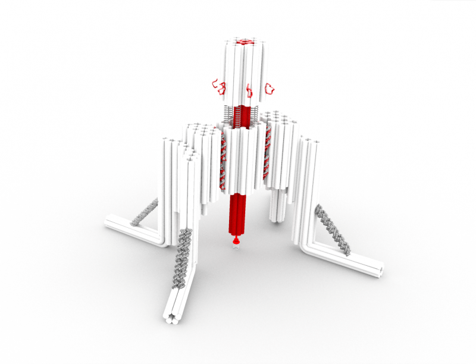

nano-robots (adn)

Ce petit robot est construit à base d’ADN. Le nano-robot permet
d’étudier de plus près des forces mécaniques qui s’appliquent à des
niveaux microscopiques et qui sont vraiment important pour des nombreux
recherche biologiques et pathologiques.
Un outil pareil est très précieux pour les expériences
fondamentales, car il pourrait être utilise pour mieux étudier
l’organismes moléculaires impliques dans la sensibilité cellulaire.
Grace a cette technologie, les scientifiques pourront également
connaitre plus précisément à quel moment, les nombreux processus
biologiques et pathologiques s’activent qu’elle niveau des cellules.
Le lien vers la source ou bien cliquer sur l'images